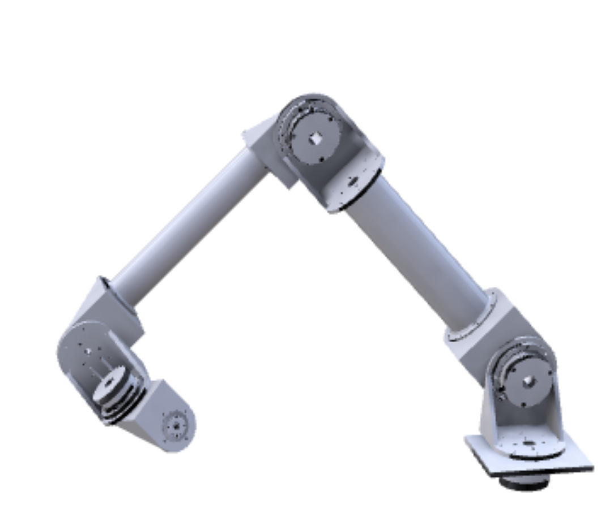

6-axis Robot
As a part of my internship during the summer of 2019 at RAAD Systems, I was tasked with creating a redesign of the UR10 robot, a 6-axis robot. This was a project I was given to handle with full autonomy Through proper inertial and torque force analysis, primarily through Matlab, I was able to select appropriate Harmonic Drive actuators depending on each individual joint. After selecting appropriate motors, over the course of multiple iterations, I was able to put together an assembly to meet general requirements provided to me. The model at the bottom is one of the iterations completed.
